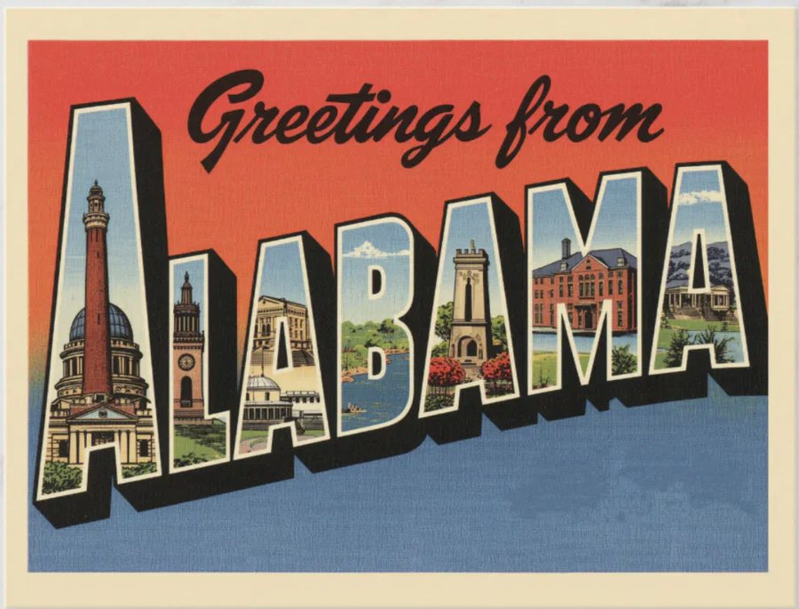
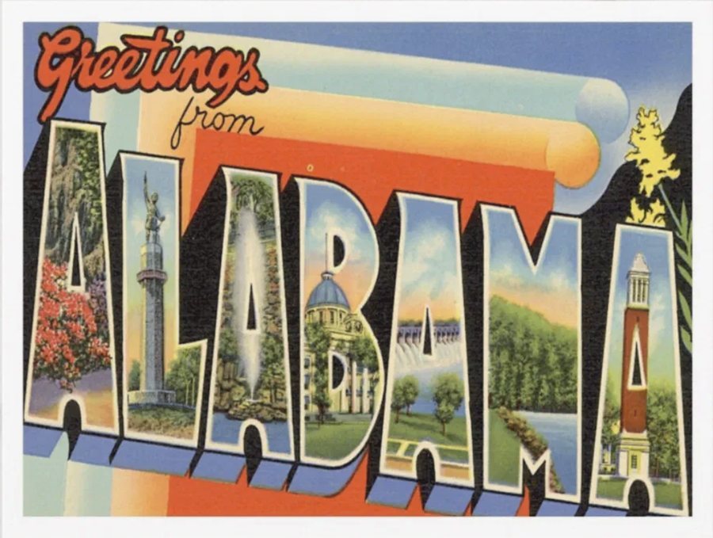

Ask us for cards
Tell us how many you need and where to send them. One for yourself, or a box for your church, class, or group. There is no cost to you.
Request postcardsThe postcard project
Governor Ivey holds the power to spare Mark Jenkins’ life. The postcard project puts that request in front of her in the handwriting of the people making it.
We are sending cards now. If you would like to write one—on your own, with your family, or with your congregation—we will mail cards to you.

The question on every card
If you were to speak to the Governor, why would you say Mark Jenkins deserves clemency?
One question, answered in your own words, in your own hand.
How it works
Tell us how many you need and where to send them. One for yourself, or a box for your church, class, or group. There is no cost to you.
Request postcardsWrite what you would say to the Governor. A few lines is enough. Signing your name is optional.
We gather and send the cards together so that Mark’s request reaches the Governor with many voices, rather than one letter at a time.
The card
The fronts reflect the great state of Alabama—the Gulf, the Magic City, the state drawn in big letters. The back is yours.
The picture side

The written side
If you were to speak to the Governor, why would you say Mark Jenkins deserves clemency?
Cards may be shown publicly, in print or online, as part of Mark’s clemency campaign. Signing your name is optional.
The fronts
The hope is to get cards from people across the state—a tapestry to lay before the Governor—and to show them here as they arrive.
Right now
Ask for cards today and we will mail them to you.
If your church, house of worship, school, or group would like to write cards together, we will send you enough for everyone.
Email teammarkjenkins@gmail.com and we will write back.